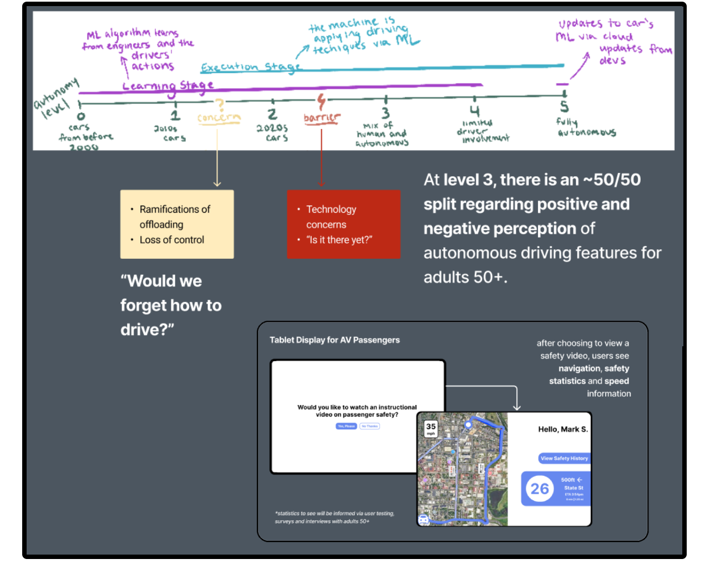

I'm happy you've found my website. I'm currently a UX researcher with experience in university labs and industry. In my free time, I like to skate down hills at a mindful pace. Please take a look around!
During my undergraduate education, I was initially interested in exploring design as a way to make adopting new technologies easier. I operated under the assumption that while emerging technology can be weaponized, there were also ways to use these technologies that benefitted society.
A-RAT was a tool designed during the 2024 Catalyst Designathon organized by BU: FORGE that I prototyped with 2 of my friends. The goal of A-RAT was to see if there was a way to design a way to use generative AI to improve reading comprehension that didn’t offload the critical thought and analysis required to understand academic writing.
By studying literacy education best practices, we came up with a solution that:
1. limited the amount of information that could be re-stated in simpler terms to prevent users highlighting a whole passage to summarize it.
2. provided an activity to check understanding after each section of the paper in which students filled in the blank of a summarized version of the section
While I’m not sure if this activity met the goal that we had sought out, this was one of the first design projects I did where I became excited about trying to solve a 'problem'.
If you’d like, you can view the write-up for this project on Devpost.

My senior capstone project was framed around one question: how might autonomous vehicle designers better facilitate adoption of their work in older generations?
The prompt came from my grandmother when I saw her for the holidays a couple of years ago. She talked to me about how her friends had stopped driving and thought (begrudgingly) that maybe they could have cars drive them to see family. The thought piqued my interest and later became the project I’m writing about right now.
Through interviews, activities and literature reviews about autonomous vehicles and technology adoption in older age groups, I came up with two frameworks to guide future autonomous vehicle design targeted towards older age groups:
1. Design for toggling autonomous driving features, providing opt-outs and quick toggles off when possible. Allow people to get comfortable with this technology at their own pace, while giving them the tools to experiment as they go.
2. Center vehicle safety in promotional efforts by gradually introducing more autonomous driving features in promotional material and educating the public about vehicle safety.
The report I wrote for this project can be found at this link.
As I worked on these projects, especially the latter, I started to question if adoption was always the best solution. Instead, I grew more concerned about how adoption of certain technologies might create new problems that outweigh possible benefits. From there, I became interested in critiques of emerging technology focused around changes in human behavior.
I joined the Design Visualization and Cognition Laboratory due to my interest in understanding how people thought thought complex processes like design. Throughout 2024 and 2025, the lab worked on a literature review and subsequent paper exploring how AI-assisted design might impact the UX design industry. As we read blog posts and compared the effects designers discussed there against Bainbridge’s Ironies of Automation, we began to paint a picture of possible impacts of the widespread adoption of AI-assisted design as a form of automation. My contribution to the paper was gathering sources, thematically coding those sources in Dovetail, analyzing those codes through the lens of automation literature, then drafting and revising the paper based on peer review prior to its publication. Specifically, I contributed most to the Background, Discussion and Limitations sections. While I didn’t attend CHI 2025, I also co-created the presentation video shared at the conference.
That paper is available on ACM’s Catalog here.
During my last semester of undergrad, I took a class focused on political communication that drew my attention to how information and misinformation are important mechanisms of influencing public opinion that in turn affects legislation. Combining this with my previous work the effects of automation and emerging technologies on human behavior, I came to the conclusion that I want to study how emerging technology is changing the way information is evaluated and understood and how these changes present themselves within indviduals and across communities.
While some literature has looked into humans’ accuracy when identifying synthetic media, not many studies have compared measurements of that accuracy against a person’s confidence that their responses are accurate. Research in this topic has covered predictors of higher accuracy, but I would like to explore how manipulating the presence of signals of an image's origin (human or LLM) and the presence of evaluative tools.
I aim to start exploring this topic through a pilot of twenty five stock image-based synthetic media identification tasks with self-reported assessments of believed accuracy after each image. For analysis, participants’ believed accuracy ratings will be compared to their accuracy both per question and overall.
I'm currently working out how to cost-effectively self-host an instance of LimeSurvey to run this, but things have been busy lately. If you're curious about the surveys contents, feel free to email me and I'll send you a draft of it.